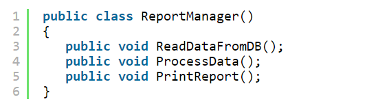
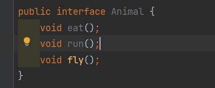
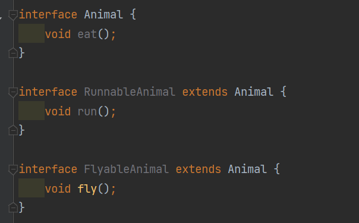

5-3-2024 - 269 lượt xem
Java Spring BootSOLID là một bộ năm nguyên tắc thiết kế. Những nguyên tắc này giúp các nhà phát triển phần mềm thiết kế các hệ thống phần mềm hướng đối tượng mạnh mẽ, có thể kiểm tra, mở rộng và bảo trì.
Mỗi nguyên tắc trong số năm nguyên tắc thiết kế này giải quyết một vấn đề cụ thể có thể phát sinh khi phát triển hệ thống phần mềm
SOLID là viết tắt của:
Trong các phần tiếp theo, chúng ta sẽ xem xét chi tiết ý nghĩa của từng nguyên tắc đó.
Nguyên tắc trách nhiệm duy nhất nêu rõ rằng một lớp, module hoặc hàm chỉ được có một lý do duy nhất để thay đổi, nghĩa là nó phải thực hiện một việc.
Để hiểu nguyên lý này, ta hãy lấy ví dụ với 1 class vi phạm nguyên lý. Ta có 1 class như sau
Class này giữ tới 3 trách nhiệm: Đọc dữ liệu từ DB, xử lý dữ liệu, in kết quả. Do đó, chỉ cần ta thay đổi DB, thay đổi cách xuất kết quả, … ta sẽ phải sửa đổi class này. Càng về sau class sẽ càng phình to ra. Theo đúng nguyên lý, ta phải tách class này ra làm 3 class riêng. Tuy số lượng class nhiều hơn những việc sửa chữa sẽ đơn giản hơn, class ngắn hơn nên cũng ít bug hơn.
Nguyên tắc đóng mở nêu rõ rằng các lớp, mô-đun và hàm phải mở để mở rộng nhưng đóng để sửa đổi.
Nguyên tắc này có vẻ mâu thuẫn với chính nó, nhưng bạn vẫn có thể hiểu nó trong mã. Điều đó có nghĩa là bạn có thể mở rộng chức năng của một lớp, mô-đun hoặc hàm bằng cách thêm nhiều mã hơn mà không cần sửa đổi mã hiện có.
Nguyên tắc thay thế Liskov là một trong những nguyên tắc quan trọng nhất cần tuân thủ trong lập trình hướng đối tượng (OOP). Nó được giới thiệu bởi nhà khoa học máy tính Barbara Liskov vào năm 1987 trong một bài báo mà bà là đồng tác giả với Jeannette Wing.
Nguyên tắc nêu rõ rằng các lớp con hoặc lớp con phải thay thế được cho các lớp cha hoặc lớp super của chúng. Nói cách khác, lớp con phải có khả năng thay thế lớp cha. Điều này có ưu điểm là cho bạn biết những gì mong đợi từ mã của bạn.
Nguyên tắc phân tách giao diện nêu rõ rằng khách hàng không nên bị buộc phải triển khai các giao diện hoặc phương pháp mà họ không sử dụng.
Cụ thể hơn, ISP gợi ý rằng các nhà phát triển phần mềm nên chia nhỏ các giao diện lớn thành các giao diện nhỏ hơn, cụ thể hơn để khách hàng chỉ cần phụ thuộc vào các giao diện phù hợp với chúng. Điều này có thể làm cho cơ sở mã dễ bảo trì hơn.
Nguyên tắc này khá giống với nguyên tắc trách nhiệm duy nhất (SRP). Nhưng nó không chỉ là một giao diện duy nhất làm một việc duy nhất – mà là việc chia toàn bộ cơ sở mã thành nhiều giao diện hoặc thành phần.
Hãy nghĩ về điều này giống như điều bạn làm khi làm việc với các khung và thư viện giao diện người dùng như React, Svelte và Vue. Bạn thường chia cơ sở mã thành các thành phần mà bạn chỉ mang vào khi cần.
Điều này có nghĩa là bạn tạo các thành phần riêng lẻ có chức năng dành riêng cho chúng. Ví dụ: thành phần chịu trách nhiệm triển khai cuộn lên trên cùng sẽ không phải là thành phần chuyển đổi giữa sáng và tối, v.v.
Ví dụ: Chúng ta có một interface Animal như sau:
Chúng ta có 2 class Dog và Snake implement interface Animal. Nhưng thật vô lý, Dog thì làm sao có thể fly(), cũng như Snake không thể nào run() được? Thay vào đó, chúng ta nên tách thành 3 interface như thế này:
Nguyên tắc đảo ngược sự phụ thuộc là về việc tách các mô-đun phần mềm. Đó là, làm cho chúng càng tách biệt với nhau càng tốt.
Nguyên tắc nêu rõ rằng các mô-đun cấp cao không nên phụ thuộc vào các mô-đun cấp thấp. Thay vào đó, cả hai nên phụ thuộc vào sự trừu tượng. Ngoài ra, sự trừu tượng hóa không nên phụ thuộc vào chi tiết, mà chi tiết nên phụ thuộc vào sự trừu tượng hóa
Nói một cách đơn giản hơn, điều này có nghĩa là thay vì viết mã dựa trên các chi tiết cụ thể về cách hoạt động của mã cấp thấp hơn, bạn nên viết mã phụ thuộc vào các khái niệm trừu tượng tổng quát hơn có thể được triển khai theo nhiều cách khác nhau.
Điều này giúp việc thay đổi mã cấp thấp hơn dễ dàng hơn mà không cần phải thay đổi mã cấp cao hơn.
Lấy ví dụ về ổ cứng của máy tính, bạn có thể dùng loại ổ cứng thể rắn SSD đời mới để chạy cho nhanh, tuy nhiên cũng có thể dùng ổ đĩa quay HDD thông thường. Nhà sản xuất Mainboard không thể nào biết bạn sẽ dùng ổ SSD hay loại HDD đĩa quay thông thường. Tuy nhiên họ sẽ luôn đảm bảo rằng bạn có thể dùng bất cứ thứ gì bạn muốn, miễn là ổ đĩa cứng đó phải có chuẩn giao tiếp SATA để có thể gắn được vào bo mạch chủ. Ở đây chuẩn giao tiếp SATA chính là interface, còn SSD hay HDD đĩa quay là implementation cụ thể.
Trong khi lập trình cũng vậy, khi áp dụng nguyên lý này, ở những lớp trừu tượng cấp cao, ta thường sử dụng interface nhiều hơn thay vì một kiểu kế thừa cụ thể. Ví dụ, để kết nối tới Database, ta thường thiết kế lớp trừu tượng DataAccess có các phương thức phương thức chung như save(), get(), … Sau đó tùy vào việc sử dụng loại DBMS nào (vd: MySql, MongoDB, …) mà ta kế thừa và implement những phương thức này. Tính chất đa hình của OOP được vận dụng rất nhiều trong nguyên lý này.